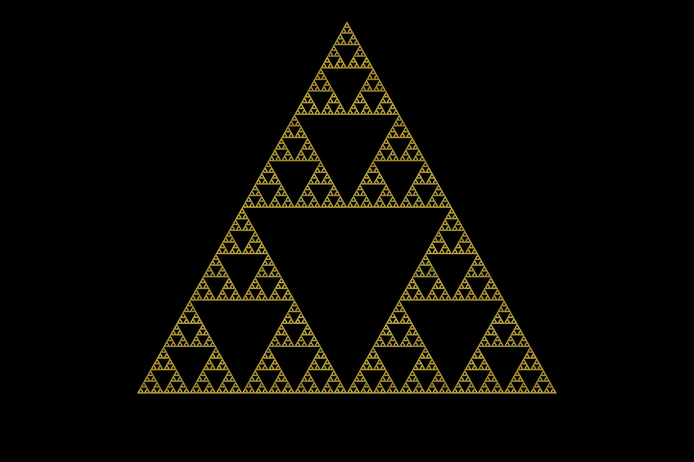

Falando sobre Deus
...| .. ...| .| ||| |. ||| ...| ||| .|.| ||| |.

O
Deus
de Spinoza
#Deus
Esta página tem como único e exclusivo objetivo a "zueira", e foi criada por um aluno para teste de programação em html